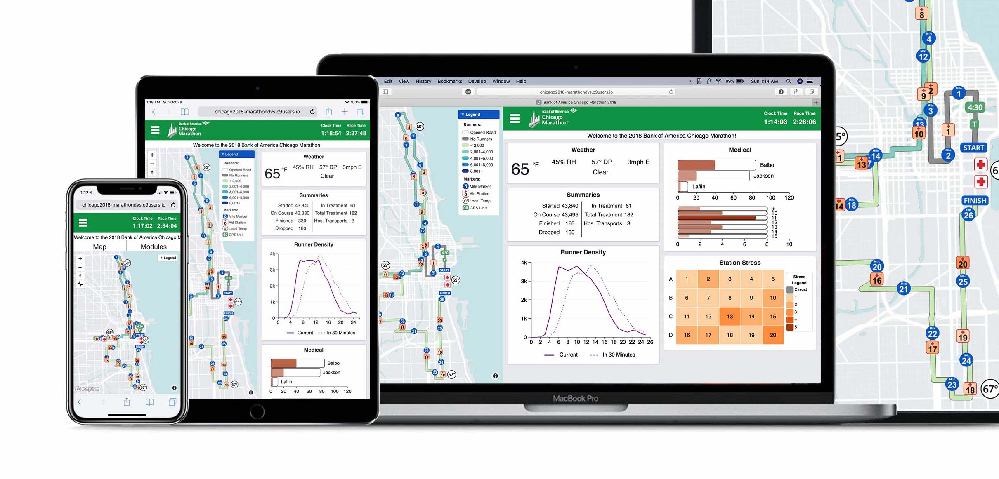
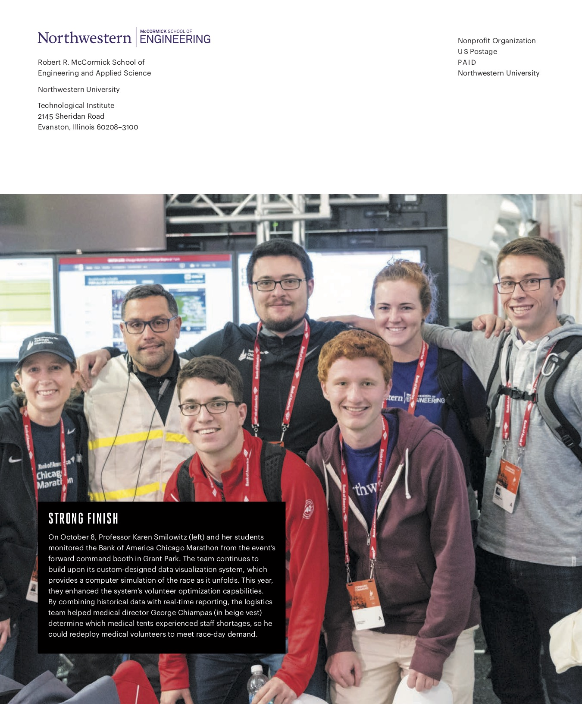

Hi, I'm Gabriel Caniglia
Marathon Data Viz System
Running a marathon in 60 seconds: a timelapse of the system in action at the 2017 Chicago Marathon.
Marathon Data Viz System
Keeping Runners Safe
I am part of a small group of students at Northwestern that develops and deploys the DVS. The DVS tracks the progress and medical information of thousands of runners, keeping race officials stationed at forward command tents informed about the status and well-being of participants.
The system works across phones, tablets, laptops, and the large monitors in forward command.
On race day, it’s used by medical professionals, public safety officials, federal government agencies, and race organizers. It allows them to monitor race progress and safety on their phones, tablets, laptops, and on large displays in forward command.

Our system is part of a massive wall of displays in forward command, shown here at the 2018 Chicago Marathon (sensitive info blurred).
Where it's used
The system is currently in use across four events, keeping over 100,000 runners from around the world safe every year:
Bank of America Chicago Marathon (45,000+ runners)
Chevron Houston Marathon (15,000+ runners)
Aramco Houston Half Marathon (20,000+ runners)
Bank of America Shamrock Shuffle (35,000+ runners)
Developing and deploying the system
During the past two years, I've helped transition the DVS to a responsive, mobile-friendly web app with new features and an optimized design.
My biggest contribution was rewriting and redesigning the dynamic course map implementation that displays runner density, medical information, GPS-tracked runners, weather, and more. I built the map using the Mapbox GL JS API.
I also spend much of my time on the project facilitating communication between the Northwestern team and race officials. I am on the ground during race days, deploying and operating the live system.
Awards and publications
Our system was awarded the prestigious INFORMS Innovative Applications in Analytics Award in April 2018. We competed against the other finalists at the INFORMS Business Analytics Conference in Baltimore, including IBM, Macy's, BNSF, and Schneider.
The team (I'm in red) featured in Northwestern Engineering Magazine
In the News
- 2018 INFORMS Business Analytics Conference: SAFE (Situational Awareness for Events): A Data Visualization System
- Northwestern: Engineers Optimize Marathon Volunteers
- Newsweek: How the Chicago Marathon Will Keep Track of 1.7 Million People
- Runner's World: Make Your Race Fantastic
- Chicago Tribune: How a real-time simulation will keep the Chicago Marathon on track
- Chicago Athlete Magazine: Data and the Bank of America Chicago Marathon